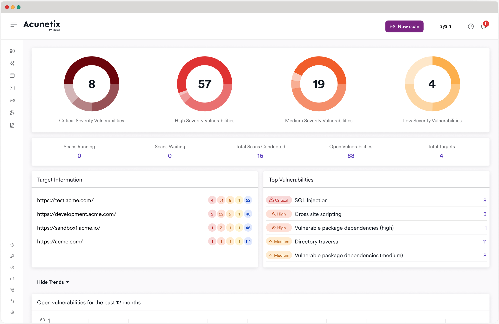

请访问原文链接：Acunetix v25.11.0 (Windows, Linux) - Web 应用程序安全测试 查看最新版。原创作品，转载请保留出处。
作者主页：sysin.org
重要提示
Acunetix Premium 现在使用日历化版本命名。请注意，从版本 23.6.230628115 开始，不再支持 Windows 8、Server 2012 和 Server 2012 R2。请将您的 Windows 操作系统更新到 Windows 10（或更高版本）或 Windows Server 2016（或更高版本）以使用此版本和即将发布的版本。
Acunetix 漏洞扫描器，管理您的 Web 应用安全。

使用 Acunetix 提高您的 Web 应用程序安全性
Acunetix 不仅仅是一个 Web 漏洞扫描器。它是一个完整的 Web 应用程序安全测试解决方案，既可以独立使用，也可以作为复杂环境的一部分使用。它提供内置的漏洞评估和漏洞管理，以及与市场领先的软件开发工具集成的许多选项 (sysin)。通过将 Acunetix 作为您的安全措施之一，您可以显着提高您的网络安全立场，并以较低的资源成本消除许多安全风险。
自动化和集成您的漏洞管理**
为了节省资源、简化修复并避免后期修补，企业通常旨在将 Web 漏洞测试作为其 SecDevOps 流程的一部分。Acunetix 是 DAST 的用于此类目的最佳工具之一，因为它在物理和虚拟环境中都具有效率。
- Acunetix 集成设计得非常简单。例如，您即可将 Acunetix 扫描集成到 CI/CD 与 Jenkins 等工具中只需几步。
- 为了有效管理漏洞，您还可以使用第三方问题跟踪器，例如 Jira、GitLab、GitHub、TFS、Bugzilla 和 Mantis。对于某些问题跟踪器，Acunetix 还提供双向集成，其中问题跟踪器可能会根据问题状态自动触发其他扫描。
- Acunetix 提供自己的 API，您可以使用它连接到第三方或内部开发的其他安全控制和软件。对于企业客户，Acunetix 技术专家将帮助您将工具集成到非典型环境中。
信任最成熟最快的漏洞扫描工具**
Acunetix 是市场上第一款自 2005 年以来不断改进的 Web 安全扫描程序。它是由 Web 安全测试专家开发的高度成熟的专业工具。这种专业化使得构建比许多捆绑工具更有效的解决方案成为可能。
- Acunetix 漏洞扫描引擎是用 C++ 编写的，使其成为 市场上最快的 Web 安全工具之一。这在扫描使用大量 JavaScript 代码的复杂 Web 应用程序时尤为重要。Acunetix 还使用了独特的扫描算法 - SmartScan，您通常可以在扫描的前 20% 中找到 80% 的漏洞。
- 速度符合非常高的漏洞发现效率。Acunetix 还以其极低的误报率而闻名 (sysin)，这有助于您在渗透测试期间进一步节省资源，并使您的分析师专注于新漏洞。Acunetix 还提供了许多漏洞的利用证明。
- 为了提高扫描效率，您可以使用多个本地部署的扫描引擎。引擎可以与 Acunetix 本地和云版本一起使用。
获得附加价值，包括网络安全**
Acunetix 有适合不同客户需求的版本。它可以本地部署在 Linux、macOS 和 Microsoft Windows 操作系统上。您还可以将其用作云产品来节省您的本地资源。
- 除了 Web 应用程序漏洞（例如 SQL 注入和 跨站点脚本 (XSS)）之外，Acunetix 还可以帮助您发现其他安全威胁。这包括 Web 服务器配置问题或错误配置、未受保护的资产 (sysin)、恶意软件和 OWASP Top 10 中列出的其他安全威胁。
- 为了保护您的关键资产，您可以将独特的 AcuSensor IAST 技术用于 PHP、Java 或 .NET。该技术可以更轻松地查明安全漏洞的原因，从而帮助您进行补救。
- Acunetix 与 OpenVAS 开源工具集成。此网络安全扫描器可帮助您扫描 IP 地址范围以发现特定于网络设备的开放端口和其他安全漏洞。您可以使用单个仪表板一起处理 Web 和网络漏洞。
系统要求
Minimum System Requirements（最低系统要求）
- Supported Operating systems
- Windows
- Microsoft Windows 10 or Windows 2016 and later
- Linux
- Ubuntu Desktop/Server 18.04 LTS or higher
- Suse Linux Enterprise Server 15
- openSUSE Leap 15.0 and 15.1
- Kali Linux versions 2019.1 and 2020.1
- CentOS 8 and CentOS Stream Server and Workstation (with SELinux disabled)
- RHEL 8 and 9 (with SELinux disabled)
- We are actively testing other Linux distributions. Please let us know if you have requests for specific distros.
- Windows
- CPU: x64 processor
- System memory: minimum of 2 GB RAM
- Storage: 1 GB of available hard-disk space.
This does not include the storage required to save the scan results - this will depend on the level of usage of Acunetix.
Note: Acunetix Premium On Premise is no longer supported on macOS. If you are using macOS, you will need to move to one of the following options:
- Move to Acunetix Premium Online
- Use Acunetix on a Virtual machine
- Use Acunetix on Docker
Supported Browsers
The Acunetix User Interface is delivered through a web server. The supported browsers are:- Firefox
- Chrome (Chromium)
- Safari
新增功能
2025 年 8 月 22 日，Acunetix Premium - 版本 25.8.0
改进：
- 提高了对
ASP.NET中 ELMAH 错误日志端点的识别准确性
修复：
- 解决了使用不同端口附加同一目标时返回“Host already attached（主机已附加）”的问题
2025 年 8 月 5 日，Acunetix Premium - 版本 25.7.0
改进内容：
- 在可用时，更新浏览器以使用第三方 Cookie
- 改进网页表单填充器，更好地支持带有数值范围的输入字段
- 更新扫描引擎，以更准确地反映扫描进度
- Acunetix 本地部署版本升级至 PostgreSQL 17
2025 年 6 月 17 日，Acunetix Premium - v25.5.0
新增功能：
- 新增对运行在 WebLogic 上的 JAVA IAST 传感器的支持（了解更多）
新增安全检查：
- 新增对 API 中 JWT 认证绕过的检测
- 新增对 SAP NetWeaver Visual Composer 任意文件上传漏洞（CVE-2025-31324）的检测
- 新增对 Craft CMS 远程代码执行漏洞（CVE-2025-32432）的检测
- 新增对缺失
X-Content-Type-Options响应头的检查 - 检测 Craft CMS 远程代码执行漏洞（CVE-2025-32432）
改进内容：
- 添加正则表达式以增强对 Django 应用中堆栈跟踪信息泄露的检测
- 改进对使用弱密钥签名的 JWT 的检测能力
- 新增对暴露的
nginx.conf和.htaccess文件的安全检查，以提升漏洞发现能力 - 添加对 LDAP 注入的检测 (sysin)
- 新增对 PII（个人身份信息）泄露漏洞的检测
- 新增对 JSON 响应中数据库连接字符串的检测，以提高对敏感数据泄露的覆盖率
- 扫描器更新，现已支持从 Linux 系统对启用 NTLM 认证的目标进行扫描
已解决的问题：
- 修复了 Cleo Harmony/VLTrader/LexiCom RCE 检测中的误报问题
- 修正了
Scripts\WebApps\drupal_3.script脚本中的版本比较逻辑错误
下载地址
推荐的系统版本：
下载链接：
Acunetix v23.6.230628115 - 28 Jun 2023 (EoD)
Acunetix v23.7.230728157 - 31 Jul 2023 (EoD)
Acunetix v23.8.230905089 - 05 Sep 2023 (EoD)
Acunetix Premium v23.9 - 28 Sep 2023 (EoD)
Acunetix Premium v23.11 - 23 November 2023 (EoD)
Acunetix Premium v24.1 - 11 January 2024 (EoD)
Acunetix Premium v24.2 - 26 February 2024 (EoD)
Acunetix Premium v24.3 - 25 Mar 2024 (EoD)
Acunetix Premium v24.4 - 30 April 2024 (EoD)
Acunetix Premium v24.5 - 30 May 2024 (EoD)
Acunetix Premium v24.6 - 27 Jun 2024 (EoD)
Acunetix Premium v24.7 - 16 July 2024 (EoD)
Acunetix Premium v24.8 - 29 August 2024 (EoD)
Acunetix Premium v24.9 - 17 October 2024 (EoD)
Acunetix Premium v24.10 - 07 Nov 2024 (EoD)
Acunetix Premium v24.11.0 - 28 Nov 2024 (EoD)
This release is for Acunetix Online only.
Acunetix Premium v24.12.0 - 16 December 2024 (EoD)
Acunetix Premium v25.1.0 - 04 Feb 2025 (EoD)
Acunetix Premium v25.2.0 does not exist
Acunetix Premium v25.3.0 - 10 Mar 2025 (EoD)
Acunetix Premium v25.4.0 - 22 Apr 2025 (EoD)
Acunetix Premium v25.5.0 - 17 Jun 2025 (EoD)
Acunetix Premium v25.6.0 does not exist
Acunetix Premium v25.7.0 - 05 Aug 2025 (EoD)
Acunetix Premium v25.8.0 - 22 Aug 2025 (EoD)
Acunetix Premium v25.9.0 does not exist
Acunetix Premium v25.10.0 does not exist
Acunetix Premium v25.11.0 - 12 November 2025
- Acunetix Premium v25.11.0 for Windows x64 - 12 November 2025
- 百度网盘链接：https://pan.baidu.com/s/1B3hwUYXpGmPeJEZb5xywQQ?pwd= <专享>
相关产品：Invicti Standard v26.8.0 for Windows - 企业级 Web 应用与 API 安全
更多相关产品：
- Magic Quadrant for Application Security Testing 2022
- Magic Quadrant for Application Security Testing 2023
更多：HTTP 协议与安全

文章用于推荐和分享优秀的软件产品及其相关技术，所有软件默认提供官方原版（免费版或试用版），免费分享。对于部分产品笔者加入了自己的理解和分析，方便学习和研究使用。任何内容若侵犯了您的版权，请联系作者删除。如果您喜欢这篇文章或者觉得它对您有所帮助，或者发现有不当之处，欢迎您发表评论，也欢迎您分享这个网站，或者赞赏一下作者，谢谢！
 支付宝赞赏
支付宝赞赏  微信赞赏
微信赞赏赞赏一下
敬请注册！点击 “登录” - “用户注册”（已知不支持 21.cn/189.cn 邮箱）。 请勿使用联合登录（已关闭）。